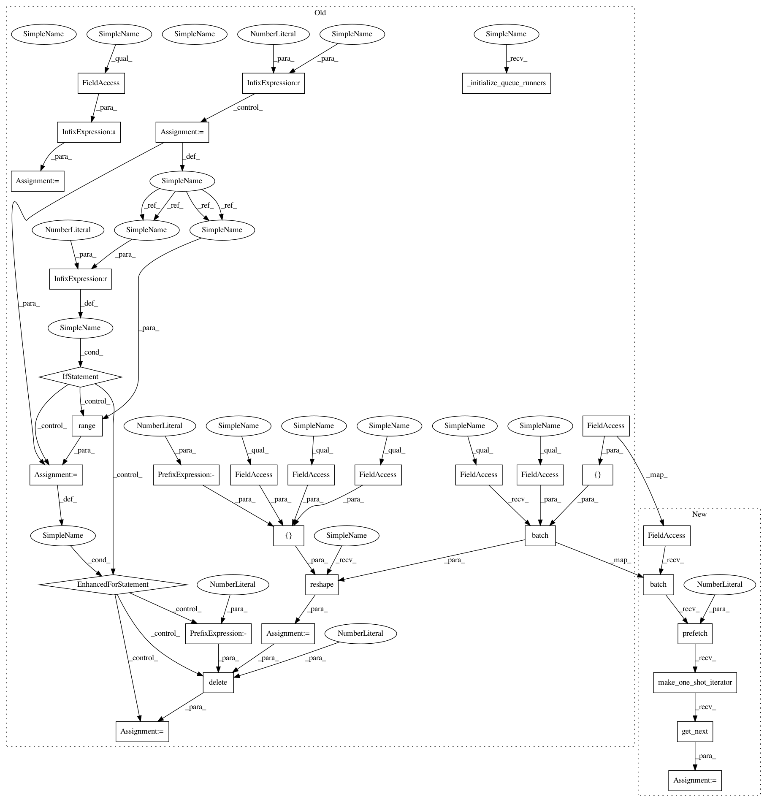

83af0d9266d3650c0260faf8c6d9a4b97389d75b,deepplantphenomics/classification_model.py,ClassificationModel,forward_pass_with_file_inputs,#ClassificationModel#Any#,261
Before Change
with self._graph.as_default():
total_outputs = np.empty([1, self._last_layer().output_size])
num_batches = len(x) // self._batch_size
remainder = len(x) % self._batch_size
if remainder != 0:
num_batches += 1
remainder = self._batch_size - remainder
// self.load_images_from_list(x) no longer calls following 2 lines so we needed to force them here
images = x
self._parse_images(images)
x_test = tf.train.batch([self._all_images], batch_size=self._batch_size, num_threads=self._num_threads)
x_test = tf.reshape(x_test, shape=[-1, self._image_height, self._image_width, self._image_depth])
if self._load_from_saved:
self.load_state()
self._initialize_queue_runners()
// Run model on them
x_pred = self.forward_pass(x_test, deterministic=True)
for i in range(int(num_batches)):
xx = self._session.run(x_pred)
for img in np.array_split(xx, self._batch_size):
total_outputs = np.append(total_outputs, img, axis=0)
// delete weird first row
total_outputs = np.delete(total_outputs, 0, 0)
// delete any outputs which are overruns from the last batch
if remainder != 0:
for i in range(remainder):
total_outputs = np.delete(total_outputs, -1, 0)
return total_outputs
def forward_pass_with_interpreted_outputs(self, x):
// Perform forward pass of the network to get raw outputs and apply a softmax
After Change
self._parse_images(images)
// x_test = tf.train.batch([self._all_images], batch_size=self._batch_size, num_threads=self._num_threads)
// x_test = tf.reshape(x_test, shape=[-1, self._image_height, self._image_width, self._image_depth])
im_data = self._all_images.batch(self._batch_size).prefetch(1)
x_test = im_data.make_one_shot_iterator().get_next()
if self._load_from_saved:
self.load_state()
// self._initialize_queue_runners()
In pattern: SUPERPATTERN
Frequency: 3
Non-data size: 32
Instances
Project Name: p2irc/deepplantphenomics
Commit Name: 83af0d9266d3650c0260faf8c6d9a4b97389d75b
Time: 2019-09-26
Author: dbl599@mail.usask.ca
File Name: deepplantphenomics/classification_model.py
Class Name: ClassificationModel
Method Name: forward_pass_with_file_inputs
Project Name: p2irc/deepplantphenomics
Commit Name: b0acdf5e8a149fb7369f4fd0c87fc62f06786426
Time: 2019-09-27
Author: dbl599@mail.usask.ca
File Name: deepplantphenomics/regression_model.py
Class Name: RegressionModel
Method Name: forward_pass_with_file_inputs
Project Name: p2irc/deepplantphenomics
Commit Name: 8d46871931696970ef63cc621341b8b8f5b0f543
Time: 2019-09-30
Author: dbl599@mail.usask.ca
File Name: deepplantphenomics/object_detection_model.py
Class Name: ObjectDetectionModel
Method Name: forward_pass_with_file_inputs
Project Name: p2irc/deepplantphenomics
Commit Name: 83af0d9266d3650c0260faf8c6d9a4b97389d75b
Time: 2019-09-26
Author: dbl599@mail.usask.ca
File Name: deepplantphenomics/classification_model.py
Class Name: ClassificationModel
Method Name: forward_pass_with_file_inputs